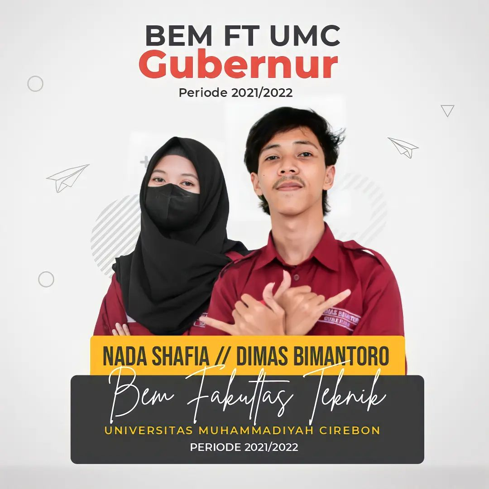
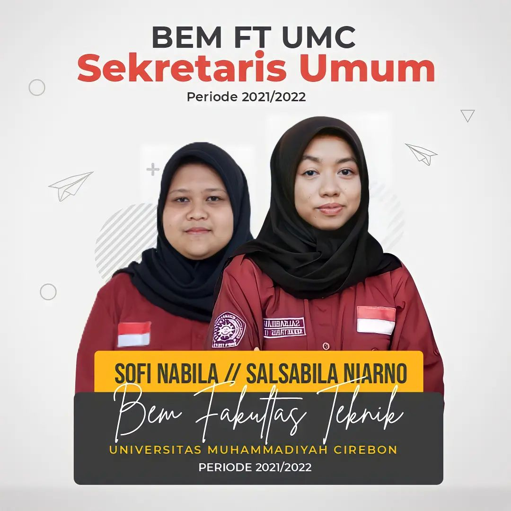
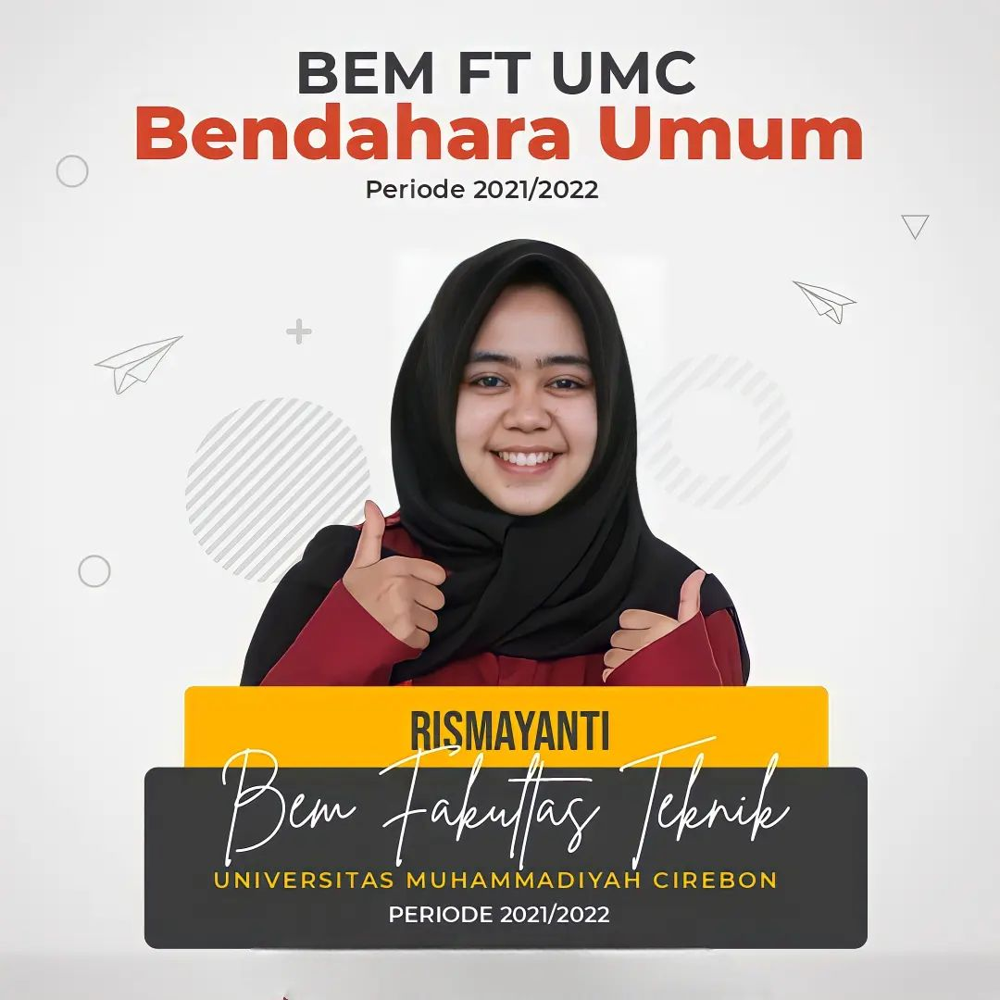
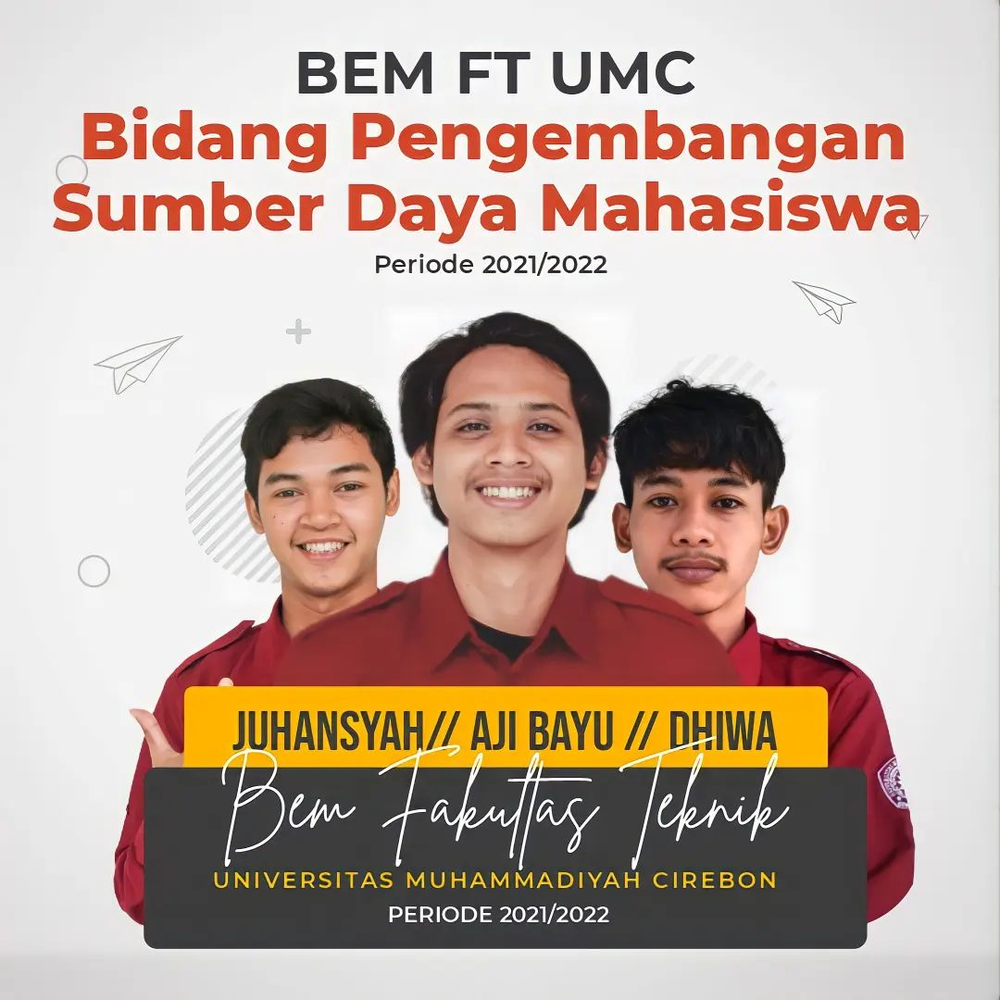
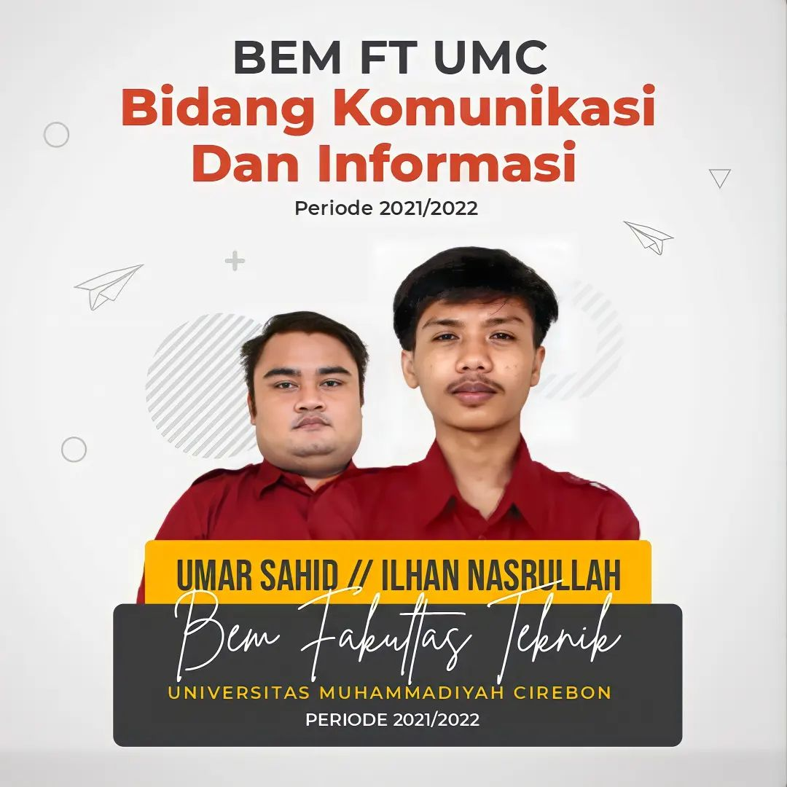
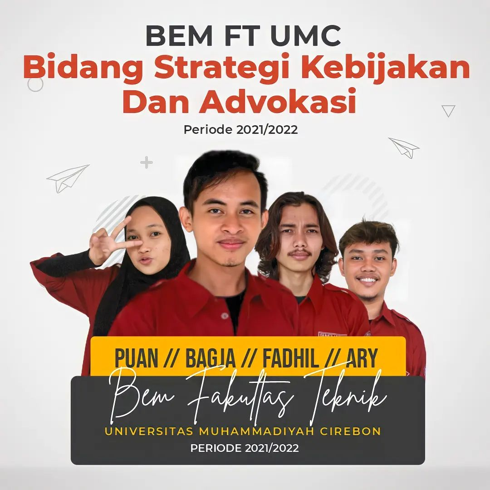
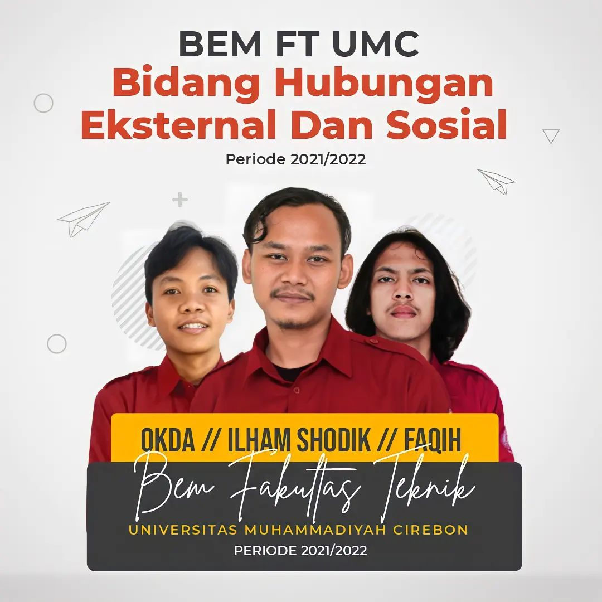
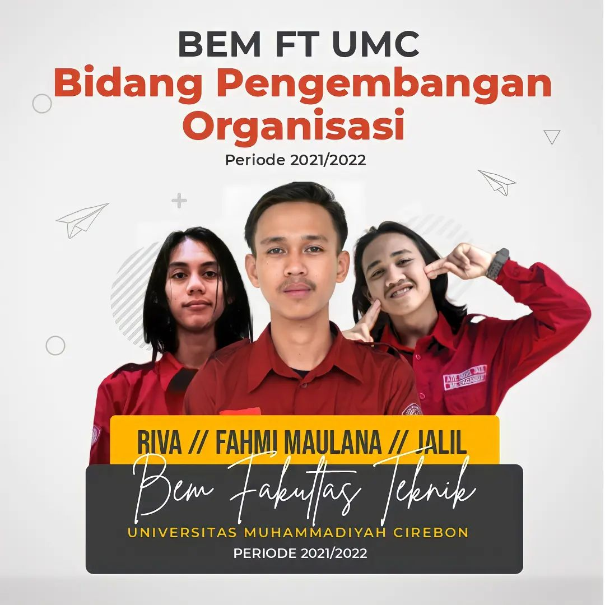
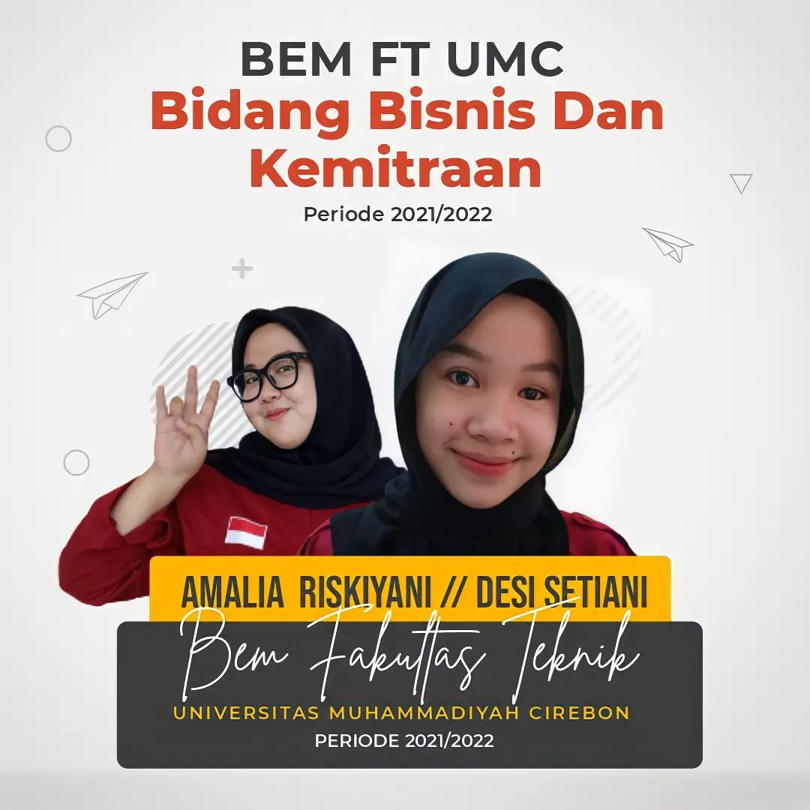

ABOUT BEM FT UMC
Badan Eksekutif Mahasiswa Fakultas Teknik (BEM FT) adalah salah satu organisasi eksekutif yang ada di Universitas Muhammadiyah Cirebon khususnya di Fakultas Teknik, sebagai wadah penyalur aspirasi mahasiswa-mahasiswa Teknik. BEM FT memiliki peran utama dan strategis, tidak hanya mewujudkan pembentukan kualitas pribadi Mahasiswa/i bermoral Islami dan cerdas secara intelektual.
Sejak didirikannya di Universitas Muhammadiyah Cirebon pada tanggal 6 Oktober 2015, BEM FT mengalami pergantian pengurus setiap tahun untuk satu periode kepengurusan. Dalam usia yang sekarang ini, BEM FT telah berupaya banyak berbuat yang terbaik untuk membantu Universitas Muhammadiyah Cirebon khususnya Fakultas Teknik dalam mengembangkan visi dan misinya, di samping menyadari pula betapa banyak kekurangan disana-sini yang perlu dibenahi pada masa mendatang.
Program Kerja
Program Kerja Periode 2022/2023
Telah sukses dilaksanakan Musyawarah Mahasiswa Badan Eksekutif Mahasiswa Fakultas Teknik pada tanggal 21-22 November yang salah satu hasilnya memutuskan saudara Ilham sebagai Gubernur Terpilih Badan Eksekutif Mahasiswa Fakultas Teknik Universitas Muhammadiyah Cirebon Periode 2022-2023
Program Kerja Periode 2021/2022
Selama Periode 2021/2022, eksistensi BEM FT di Universitas Muhammadiyah Cirebon mengalami peningkatan. Hal ini terlihat dari lebih bergerak laginya BEM FT yang beberapa tahun sebelumnya mengalami kekosongan kegiatan di dalamnya dikarenakan beberapa hal. Selama satu periode ini BEM FT mampu menjalankan beberapa program kerja yang mampu memberikan konstribusi dan manfaat bagi mahasiswa Teknik Universitas Muhammadiyah Cirebon
Program Kerja Periode 2019/2020

Salah satu bentuk kontribusi BEM FT adalah dengan menggelar Seminar Beasiswa dengan menghadirkan pemateri-pemateri yang terpercaya. Sasaran dari Seminar Beasiswa tersebut adalah mahasiswa/mahasiswi Fakultas Teknik. Namun di luar dugaan, mahasiswa/mahasiswi pendaftar ada yang berasal dari Fakultas lain.
Program Kerja Periode 2018/2019

Acara ini digelar sebagai wujud eksistensi kami sebagai Badan yang menaungi seluruh Mahasiswa Fakultas Teknik yang terus bergerak dan akan berjalan ke tahun-tahun berikutnya, serta untuk mewujudkan salah satu program kerja Divisi Pengembangan Organisasi yang mana menjadi bagian dar Badan Eksekutif Mahasiswa Fakultas Teknik
OUR TEAM








